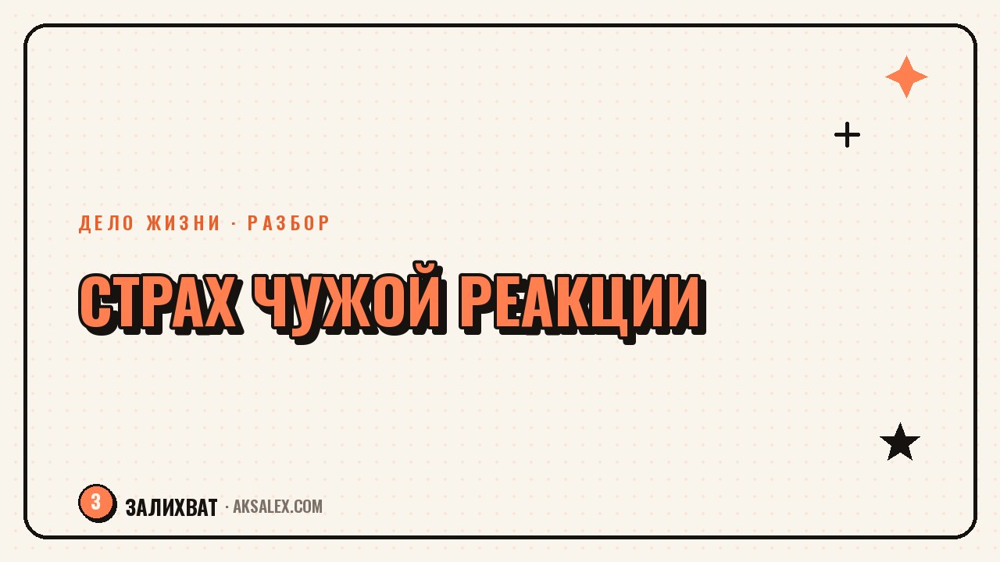

Страх реакции близких: как решиться на смену пути

Решение почти принято: уйти с надёжной работы, попробовать своё дело, сменить профессию. И тут в голове включается не твой голос, а голос мамы: «ты с ума сошла, а если не получится». Или голос партнёра, который привык к стабильному доходу и спокойно жить не может. Страх чужой реакции часто сильнее страха самой неудачи - и именно он держит людей годами на месте, где давно некомфортно. Разберём, откуда этот страх берётся, как отличить заботу от манипуляции и как говорить о решении так, чтобы не разрушить отношения.
Почему чужое мнение весит больше своего решения
С детства многие привыкают, что одобрение близких - это и есть подтверждение правильности поступка. Если мама довольна - всё хорошо. Если хмурится - что-то не так, даже если по факту всё в порядке. Привычка формируется годами и не исчезает только потому, что ты выросла.
Во взрослой жизни это превращается в постоянную сверку: перед важным решением мозг автоматически прогоняет сценарий «а что скажут». Если воображаемая реакция негативная, решение откладывается - даже если человек ещё ничего не сказал.
Страх чужой реакции - это страх перед воображаемым разговором, который может вообще не состояться в той форме, как ты его представляешь.
Забота или давление: как отличить
Не всякое беспокойство близких - манипуляция. Иногда родители или партнёр действительно переживают за стабильность и говорят об этом из любви. Разница в том, что происходит после твоего ответа.
Признаки заботы
- Человек задаёт вопросы о плане, а не только критикует саму идею.
- После разговора отношения не портятся, даже если он остался при своём мнении.
- Он готов услышать твои аргументы и хотя бы допустить, что может ошибаться.
Признаки давления
- Тема поднимается снова и снова, даже когда ты уже всё объяснила.
- В ответ на твои аргументы - обвинения, а не вопросы: «ты эгоистка», «ты всех подводишь».
- Согласие используется как условие любви или поддержки: «если сделаешь это, я перестану с тобой общаться».
Заботу можно обсуждать и находить компромиссы. Давление обсуждать почти бесполезно - там дело не в фактах и аргументах, а в желании сохранить контроль над твоим решением.
Как говорить о решении, если боишься реакции
Разговор проходит легче, если ты приходишь не с вопросом «а что вы думаете», а с уже принятым решением и планом. Вопрос приглашает к обсуждению и спорам, план - к разговору о деталях.
Как построить разговор
- Говори о решении, а не о сомнении: «я решила попробовать», а не «я думаю, может быть, стоит попробовать».
- Заранее продумай ответ на главный страх близких - обычно это деньги. Покажи, что у тебя есть план на этот случай.
- Не жди немедленного одобрения - дай человеку время привыкнуть к новости, не требуя реакции прямо в моменте разговора.
- Установи границу, если разговор переходит в обвинения: «я услышала твоё мнение, решение я уже приняла».
Полезно один раз подробно объяснить логику решения, а дальше не защищать его заново при каждом напоминании - иначе ты превращаешься из человека, который решил, в человека, который постоянно оправдывается.
Что делать, если близкие так и не согласны
Бывает, что одобрения так и не наступает - ни через месяц, ни через год. Важно отделить два вопроса: можешь ли ты жить своей жизнью без согласия близких и можешь ли сохранить с ними отношения при разных взглядах. Это не взаимоисключающие вещи.
| Ситуация | Что в твоей власти | Что не в твоей власти |
|---|---|---|
| Родители недовольны выбором | Твои действия, твой план, твоя жизнь | Их мнение и скорость, с которой они его меняют |
| Партнёр боится потери дохода | Прозрачный разговор о бюджете и подушке | Его тревога как чувство - она может остаться |
| Друзья не понимают решение | Выбор, с кем обсуждать планы подробно | Их реакция и комментарии со стороны |
Жить своей жизнью не означает разрыв отношений - можно общаться и любить друг друга, не соглашаясь по конкретному вопросу. Ждать полного согласия как условие для действия - способ никогда не начать.
Как перестать проигрывать разговор в голове заранее
Если ловишь себя на том, что много раз мысленно репетируешь разговор, попробуй написать короткий план на бумаге - дату, формулировку, главный аргумент. Перенос из головы на бумагу снижает тревогу, превращая прокручивание сценариев в один конкретный шаг.
Стоит также честно спросить себя: от чьего имени звучит этот страх - от своего собственного или от голоса конкретного человека, который давно живёт у тебя в голове советчиком. Иногда оказывается, что человек в реальности отреагирует спокойнее, чем его образ, который ты носишь с собой.
Ты не обязана получить одобрение, чтобы иметь право на собственное решение.
Частые вопросы
Как понять, что мой страх - это забота близких, а не манипуляция?
Смотри на то, что происходит после разговора: забота оставляет пространство для твоих аргументов и не портит отношения при разном мнении. Манипуляция возвращается к теме снова и снова и использует обвинения вместо вопросов.
Что делать, если родители грозят перестать общаться из-за моего решения?
Это признак давления, а не заботы, и здесь важно не поддаваться угрозе, а чётко обозначить границу: ты услышала их позицию, но решение остаётся твоим. Угроза разрыва отношений - это способ контроля, а не аргумент по сути вопроса.
Как рассказать партнёру о смене профессии, если он боится за бюджет?
Приходи с готовым планом по деньгам - подушка, сроки, резервный вариант - а не только с идеей. Конкретные цифры снижают тревогу лучше любых уговоров и показывают, что решение обдуманное, а не импульсивное.
Почему я боюсь реакции близких сильнее, чем самой неудачи в новом деле?
Часто это привычка из детства, где одобрение значимых людей служило подтверждением, что всё идёт правильно. Эта привычка не исчезает сама, но с ней можно работать осознанно, отделяя своё решение от чужой оценки.
Можно ли сохранить отношения с близкими, если они не согласны с моим решением?
Да, несогласие по одному вопросу не обязательно разрушает отношения в целом. Можно продолжать общаться и заботиться друг о друге, признавая, что у вас разные взгляды именно на этот конкретный шаг.
Раз тема оказалась полезной, вот что почитать следующим. Признаки, что пора менять работу, и план, как перейти без спонтанных решений и паники.
Читать статью →а не вручную